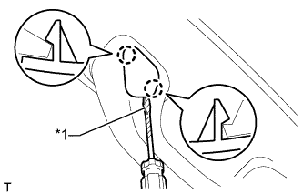
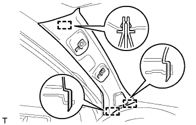
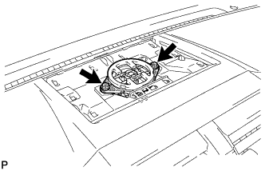

INSTRUMENT PANEL SPEAKER > REMOVAL |
| 1. DISCONNECT CABLE FROM NEGATIVE BATTERY TERMINAL |
| Condition | Waiting Time |
| Vehicle enrolled in G-BOOK system | 6 minutes |
| Vehicle not enrolled in G-BOOK system | 1 minute |
| 2. REMOVE FRONT NO. 1 ASSIST GRIP PLUG LH |
|  |
Using a screwdriver, detach the 2 claws and remove the front No. 1 assist grip plug.
| *1 | Protective Tape |
| 3. REMOVE NO. 1 ASSIST GRIP |
 |
Remove the 2 bolts.
Detach the 2 claws and remove the No. 1 assist grip.
| 4. REMOVE FRONT PILLAR GARNISH LH |
|  |
Detach the 3 guides and remove the front pillar garnish.
 |
Protect the curtain shield airbag assembly.
Completely cover the airbag with a cloth or nylon sheet and secure the ends of the cover with adhesive tape as shown in the illustration.
| *1 | Curtain Shield Airbag Assembly |
| *2 | Adhesive Tape |
| *3 | Protective Cover |
| 5. REMOVE NO. 1 INSTRUMENT PANEL SPEAKER PANEL SUB-ASSEMBLY |
 |
Detach the 4 claws, 2 clips and guide and remove the instrument cluster finish panel.
| 6. REMOVE FRONT NO. 2 SPEAKER ASSEMBLY |
Remove the 2 screws.
Remove the front No. 2 speaker and disconnect the speaker connector.
| 7. REMOVE UPPER INSTRUMENT CLUSTER FINISH PANEL |
Put protective tape around the upper instrument cluster finish panel.
Using a screwdriver, detach the 11 clips and remove the upper instrument cluster finish panel.
| *1 | Protective Tape |
| 8. REMOVE FRONT NO. 4 SPEAKER ASSEMBLY |
|  |
Remove the 2 screws.
Remove the front No. 4 speaker and disconnect the speaker connector.